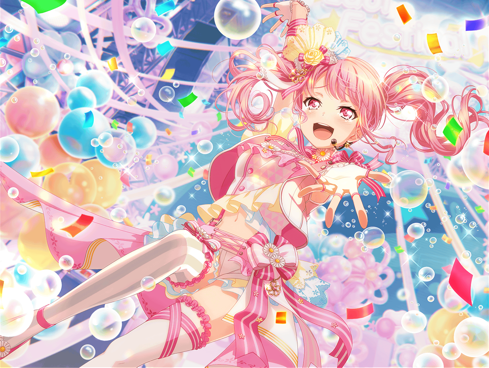

レコードショップ
彩
えーっと、確かこの辺に……あった！
まりな
彩ちゃん、こんにちはー
彩
わ、まりなさん、{{userName}}さん！
どうも、お疲れ様です。今日は何か買い物ですか？
まりな
うん。私達はちょっとCDを探しに来たんだけど、
彩ちゃんも何か探しものしてたのかな？
彩
い、いえ！
探しものっていう感じじゃないんですけど……
まりな
え？ どうしたの？
なんか顔が赤くなってるけど……
彩
じ、実は……
今まで発売されたパスパレのCDを見てたんです！
彩
CDはもちろん自分でも持ってるんですけど、
自分達のCDがお店に並んでるのを見ると、
本当に勇気が出てくるっていうか
彩
アイドルの研究生だったころから考えると、
これってすごい夢みたいなことじゃないですか
彩
そんな夢みたいなことを、私はパスパレで実現できたんです
彩
だから私にとってパスパレって、
私の夢そのものなのかもしれないなって……
まりな
パスパレが、彩ちゃんの夢そのもの……か。
なんかその言葉、すっごい納得できるね。
キミもそう思うでしょ？
まりな
あ、そういえば、この前もパスパレの新曲が発表されたって
ネットのニュースで見たよ？ ホントにすごいよ！
彩
あ、まりなさん達も知ってくれてるなんて嬉しいです！
彩
今度の曲は、いろんな事があった中でもらった曲なので、
あの歌を歌う時は、どうしてもその時のことを
思い出しちゃうんです
彩
パスパレへの感謝の気持ちとか、
いつも一緒にいてくれるメンバーへの想いとか
彩
そういう言葉にできない感情が溢れてきて、
いっつも泣きそうになっちゃって……
というか、実際泣いちゃってるんですけど
まりな
そっかー。
けど、そんなに気持ちを込めて歌ってもらえる歌って、
すっごい幸せだと思うよ
まりな
彩ちゃんの想いが歌にのって、
それを聴いているファンの人達に届いて、
ファンの人達もきっと幸せな気持ちになれるんじゃないかな？
彩
は、はい！ そうですよね！
今度また、イベントで歌うことになっているので、
毎日練習してるんですけど……
彩
練習の度に毎回、涙がでてきちゃって、
ハンカチが何枚あっても足りないんです
彩
日菜ちゃんにも、『彩ちゃん、まだ練習だけどー』って
笑われちゃうから、なんとか泣かないで
歌うようにしようと思ってたんです
彩
けど……
今のまりなさんの話を聞いて、
今まで通りいこうって思いました！
彩
ファンの方々に、私のこの想いを伝えないと
意味がないですよね！
まりな
うん、私もそう思う！
そういう彩ちゃんの歌声に、みんな勇気づけられてるんだよ
彩
あ、ありがとうございます！
もしお時間があったらイベントにも来てくれると嬉しいです！
彩
その時は、まりなさん、{{userName}}さんの感想、
ぜひ聞かせてくださいね！
彩
あ！ もうこんな時間だっ……！
今日も練習があるんで、私行きますね！
彩
それでは、失礼しまーす！